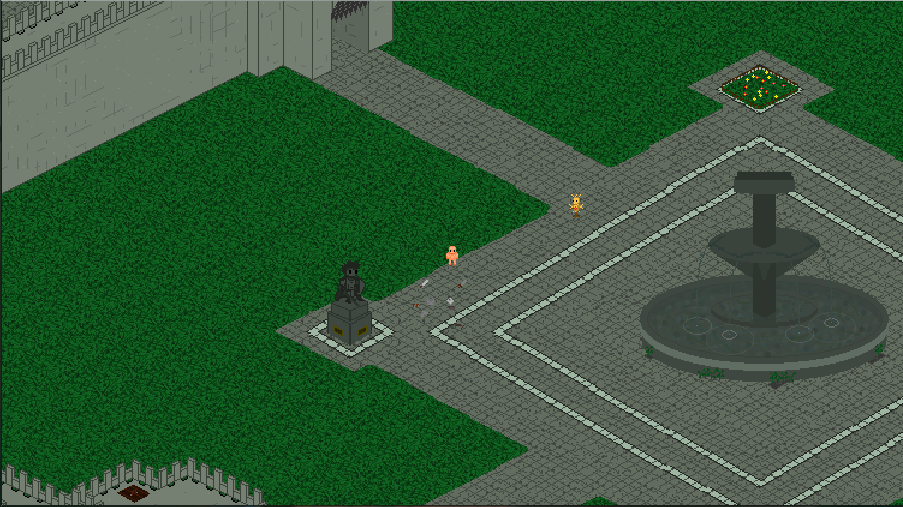

Il s'agit du stage de fin d'étude que j'ai réalisé durant mon master. Le but de ce stage était de réalisé des "proofs of concepts" avec Unity 3D en Réalité virtuelle.
J'ai eu notamment l'occasion de travailler avec le Leap Motion, une technologie capable de détecter et représenter en 3D les mains de l'utilisateur.
Un autre des projets a été de créer un package permettant d’utiliser la réalité virtuelle avec plusieurs utilisateurs en se connectant via le réseau.
Pour plus d'infos sur ce stage téléchargez le rapport de stage :
Manipulations de terrain dans Unity, programmées pour fonctionner en temps réel directement dans l'éditeur.
Cela utilise le code open-source FastNoise , afin de produire la forme semi-aléatoire. Directement dans l'éditeur, on peut créer plusieurs layers de noise afin de créer des formes plus complexes.
Drone Shooter
Un prototype pour tester les fonctonalités 3D de Unity en faisant un FPS.
Asteroïds
Un remake du célèbre jeu Asteroïds de 1979 fait sur Unity.
Pour jouer utilisez les flèches directionnelles pour vous déplacer et ESPACE pour tirer.
DragonBall NINJIN est un projet de serveur Minecraft dans le thème de Dragon Ball basé sur le mod Dragon Block C de JinGames. Il s'agit d'un serveur survival et semi-RP francophone, le but étant de se rapprocher le plus fidèlement possible de l'ambiance de l'univers de DragonBall décrit dans le manga et anime éponyme.
Pour plus d'infos allez visiter le site web du serveur :
Ci dessous une vidéo d'un mod (ajout de la race de Cell pour le mod Dragon Block C) pour lequel j'ai perçu, en contre partie de sa réalisation, un paiement :
Un petit prototype d'action-RPG sur GameMaker. Tous les assets ont été réalisés par moi-même. Jeu très simple où le joueur peut se déplacer/attaquer, ainsi que rammasser de l'équipement. Pour l'instant vous pouvez uniquement combattre un individu désarmé dans une arêne qui respawnera à chaque fois que vous quittez le lieu.

Pour jouer utilisez les flèches directionnelles pour vous déplacer, A/Z pour Attaquer, W/X pour attrapper un objet, C/V pour dropper un objet de la main, B/N/H pour dropper de l'équipement et ESPACE pour intéragir. Pour combattre dans l'arêne, prenez l'entrée en haut à gauche, puis déplacer vous à gauche et appuyez sur ESPACE pour entrer dans l'arêne.